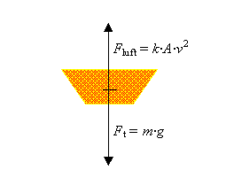
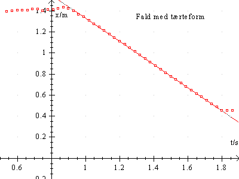

Formålet med forsøget er at undersøge bevægelse med luftmodstand.
CBL logger, motion detector, Datalyse + tærteforme fra bageren.
CBL 2 eller LabPro kan også bruges.

TeoriTærteformen er påvirket af to kræfter:
Tyngdekraften
Ft = m·g,
hvor m er massen, g er tyngdeaccelerationen og luftmodstanden er
Fluft = k·A·v2.
Her er k er en konstant, A er tærtens tværsnitsareal og v er farten.
På figuren til højre er indtegnet tyngdekraften Ft og luftmodstanden Fluft på tærteformen. De to kræfter er modsat rettede og når bevægelsen er jævn, er de 2 kræfter lige store.
Med en afstandsmåler kan man måle afstanden til et legeme. Sonden måler afstanden ved at udsende et lydsignal og måle tiden, fra signalet er afsendt, til signalet er reflekteret til sonden. Ved at udsende signaler fx hvert 0,03 sekund, kan man få løbende værdier af afstanden fra sonde til legeme. Sonden måler afstanden til nærmeste legeme inden for en rumvinkel på 20° og inden for afstande fra ca. 0,40 m til ca. 6 meter.
Sonden anbringes på gulvet, og tærteformen holdes ca. 2 meter over sonden. CBL'en styres fra Datalyse. I Datalyse vælger man CBL'en som apparat og vælger i menuen for apparatet »Scan på 1 kanal«. Her indstilles antal målinger fx til 100 og tid pr. måling til 0,03 sekund og som sonde vælges afstandsmåler. Når CBL'en måler afstand, giver sonden et klik for hver måling. I praksis kan målingen derfor foretages ved at en person sidder ved pc'en og styrer Datalyse, og en anden person holder tærteformen. Når sonden begynder at klikke, slippes tærteformen.

Når sonden holder op med at klikke, kan målingerne hentes. I Datalyses memo vælges »Læs Scan« Herved overføres data fra CBL'en til Datalyse og en graf tegnes.
Foretag så forsøg med 2, 3, 4 og 5 kageforme inden i hinanden. Husk at bestemme masse og diameter af tærteformen.
Vælg lineær regression i Datalyse og bestem herved hastigheden af formen, når bevægelsen er blevet jævn. Diskuter selv den fysiske situation og forklar grafens udseende. Hver enkelt del af grafen beskrives!
Benyt de målte værdier til at udregne konstanten k for alle forsøg og undersøg, om k bliver den samme.